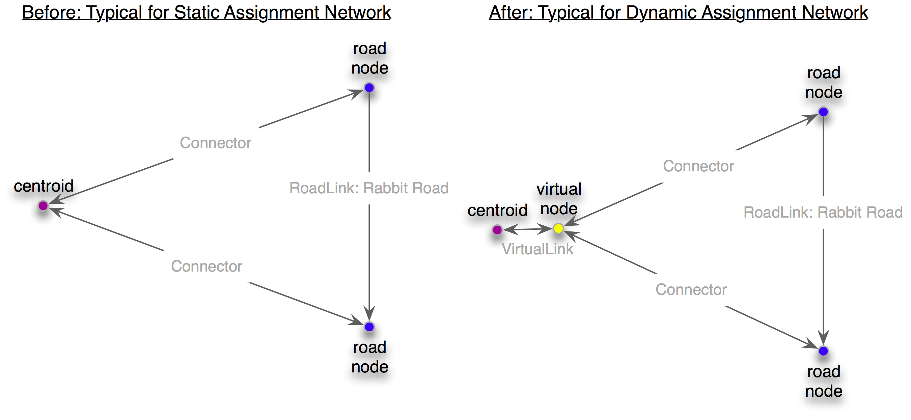

dta.DynameqNetwork¶
- class dta.DynameqNetwork(scenario)¶
Bases: dta.Network.Network
A Dynameq DTA Network.
- __init__(scenario)¶
Constructor. Initializes to an empty network.
Keeps a reference to the given dynameqScenario (a DynameqScenario instance) for VehicleClassGroup lookups
Methods
- ADVANCED_FILE¶
Dynameq’s Advanced Network File name
- BASE_FILE¶
Dynameq’s Base Network File name
- CONTROL_FILE¶
Dynameq’s Traffic Control Plan File name
- PRIORITIES_FILE¶
Dynameq’s Custom Priorities File name
- TRANSIT_FILE¶
Dynameq’s Transit Lines File name
- addAllMovements(vehicleClassGroup, includeUTurns=False)¶
For each RoadNode and each VirtualNode, makes a movement for the given vehicleClassGroup (a VehicleClassGroup instance) from each incoming link to each outgoing link (not including VirtualLink instances).
If includeUTurns, includes U-Turn movements for each link as well, otherwise omits these.
If either the incoming link or the outgoing link returns false for RoadLink.allowsAll(), then uses the lane permission from that link instead.
Todo
This last bit is somewhat arbitrary, could be refined further.
- addLink(newLink)¶
Verifies that:
- the newLink is a Link
- that the id is not already used
- the nodepair is not already used
Stores it.
- addMovement(newMovement)¶
Adds the movement by adding it to the movement’s incomingLink
- addNode(newNode)¶
Verifies that newNode is a RoadNode, VirtualNode or Centroid and that the id is not already used; stores it.
- addPlanCollectionInfo(startTime, endTime, name, description)¶
startTime Utils.Time instance endTime Utils.Time instance
name: a string that identifies the plan collection description: a string that gives more infromation about the plan collection
- areIDsUnique(net2)¶
Returns True if the node and link Ids are unique
- deepcopy(originNetwork)¶
Copies the contents of the originNetwork by creating copies of all its constituent elements into self (Nodes and Links and Movements, not the scenario). If the originNetwork contains an element with an already existing id this method will throw an exception.
- findLinksForRoadLabels(on_street_label, on_direction, from_street_label, to_street_label, remove_label_spaces=False)¶
Attempts to find the link(s) with the given on_street_label and on_direction from the street matching from_street_label to the street matching to_street_label.
on_street_label, from_street_label and to_street_label are checked against RoadLink labels and should be upper-case. If remove_label_spaces is True, then the labels will have their spaces stripped before comparison.
on_direction is one of RoadLink.DIR_EB, RoadLink.DIR_NB, RoadLink.DIR_WB or RoadLink.DIR_SB.
Raises a DtaError on failure, returns a list of RoadLink instances on success.
- findMovementForRoadLabels(incoming_street_label, incoming_direction, outgoing_street_label, outgoing_direction, intersection_street_label=None, roadnode_id=None, remove_label_spaces=False, use_dir_for_movement=True, dir_need_not_be_primary=False)¶
Attempts to find the movement from the given incoming_street_label and incoming_direction to the given outgoing_street_label and outgoing_direction. If this is a through movement or a U-Turn (e.g. incoming_street_label == outgoing_street_label), then intersection_street_label is also required to identify the intersection.
incoming_street_label, outgoing_street_label and intersection_street_label are checked against RoadLink labels and should be upper-case. If remove_label_spaces is True, then the labels will have their spaces stripped before comparison.
incoming_direction and outgoing_direction are one of RoadLink.DIR_EB, RoadLink.DIR_NB, RoadLink.DIR_WB or RoadLink.DIR_SB.
Pass optional roadnode_id to speed things up but if the movement is not found for that RoadNode, this method will fall back and try to find the movement based on the labels.
Pass use_dir_for_movement as True if the incoming_street_label and outgoing_street_label are useful for identifying the intersection but not necessary for the movement (e.g. only the direction needs to match)
Pass dir_need_not_be_primary as True if the direction matching should be loose; e.g. if RoadLink.DIR_EB means the link must be going eastbound somewhat even if it’s really heading south east and so RoadLink.getDirection() returns :py:attr:RoadLink.DIR_SB`.
Raises a DtaError on failure, returns a Movement instance on success.
- getLinkForNodeIdPair(nodeAId, nodeBId)¶
Accessor for the link given the link nodes. Raises DtaError if not found.
- getLinkType()¶
Return a unique integer representing the link type
Todo
What is this for?
- getMaxLinkId()¶
Return the max link Id in the network
- getMaxNodeId()¶
REturn the max noe id in the network
- getNodeType()¶
Return a unique integer representing the node type.
Todo
What is this for?
- getNumCentroids()¶
Returns the number of centroids in the network
- getNumConnectors()¶
Return the number of connectors in the Network
- getNumLinks()¶
Returns the number of links in the network
- getNumNodes()¶
Returns the number of nodes in the network
- getNumOverlappingConnectors()¶
Return the number of connectors that overlap with a RoadLink or another connector
- getNumRoadLinks()¶
Return the number of RoadLinks in the Network(excluding connectors)
- getNumRoadNodes()¶
Returns the number of roadnodes in the network
- getNumTimePlans()¶
Return the number of nodes with a time plan
- getNumVirtualLinks()¶
Return the number of connectors in the Network
- getNumVirtualNodes()¶
Returns the number of virtual nodes in the network
- getPlanCollectionInfo(startTime, endTime)¶
Return the plan collection info for the given input times startTime Utils.Time instance endTime Utils.Time instance
- getScenario()¶
Return the scenario object associated with this network
- handleOverlappingLinks(warn, moveVirtualNodeDist=None)¶
For each node, checks if any incoming links overlap, and if any outgoing links overlap.
If moveVirtualNodeDist is passed, if the overlapping links includes a c:py:class:Connector, the VirtualNode instance will be moved +- moveVirtualNodeDist in each direction to see if that resolves the overlap. If not, the node retains its original location.
moveVirtualNodeDist is in Node.COORDINATE_UNITS
- (order attempted: (0,+dist), (+dist,0), (0,-dist), (-dist,0),
- (+dist,-dist), (+dist,+dist), (-dist,+dist), (-dist,-dist))
- handleShortLinks(minLength, warn, setLength)¶
Goes through the RoadLink instances (including Connectors) and for those with lengths less than minLength, do the following:
- if warn then issue a warning
- if setLength then adjust the length attribute to the minimum
Note that minLength and setLength are both in the units specified by RoadLink.LENGTH_UNITS
- hasCentroidForId(nodeId)¶
Return True if there is a centroid with the given id
- hasLinkForId(linkId)¶
Return True if a link with the given id exists
- hasLinkForNodeIdPair(startNodeId, endNodeId)¶
Return True if the network has a link with the given node ids
- hasNodeForId(nodeId)¶
Return True if there is a node with the given id
- hasPlanCollectionInfo(startTime, endTime)¶
Return True if the network has a time plan connection for the given start and end times startTime Utils.Time instance endTime Utils.Time instance
- insertVirtualNodeBetweenCentroidsAndRoadNodes(startVirtualNodeId=None, startVirtualLinkId=None, distanceFromCentroid=0)¶
In some situations (for example, for a Dynameq netork), there need to be intermediate nodes between Centroid nodes and RoadNode objects.
If defined, the virtual nodes that will be added will begin from startVirtualNodeId and the virtual links from startVirtualLinkId. The new virtual node will be placed along the connector link a distance away from the centroid specified by distanceFromCentroid (in Node.COORDINATE_UNITS), so it will be in the same location if that argument is specified as zero.
- iterLinks()¶
Return an iterator to the link collection
- iterNodes()¶
Return an iterator to the node collection
- iterPlanCollectionInfo()¶
Return an iterator to the planInfo objects
- iterRoadLinks()¶
Return an iterator for to the RoadLink instances in the network that are not instances of Connector.
- iterVirtualLinks()¶
Return an iterator to the VirtualLink instances in the network.
- iterVirtualNodes()¶
Return an iterator to the VirtualNode instances in the network.
- mergeLinks(link1, link2)¶
Merge the two input sequential links. If any of the characteristics of the two links are different (except their length) the method will throw an error
- mergeSecondaryNetwork(secondaryNetwork)¶
This method will create a polygon around the current (primary network). Every node or link of the secondary network that is not in the polygon will be copied.
Todo
Code review and more detailed documentation.
- mergeSecondaryNetworkBasedOnLinkIds(secondaryNetwork)¶
This method will add all the elements of the secondary network to the current one. The method will throw an exception if there is an element of the current and secondary network have a common id
- mergeSecondaryNetworkBasedOnLinkIds2(secondaryNetwork)¶
This method will create copies of all the elements of the secondary network that do not exist in the current network and add them to the current network. The method will merge the networks using node and link ids. Elements of the secondary network having an id that exists in this network will not be coppied.
- moveCentroidConnectorFromIntersectionToMidblock(roadNode, connector, splitReverseLink=False, moveVirtualNodeDist=None)¶
Remove the input connector for an intersection and attach it to a midblock location. If a midblock location does does not exist a RoadLink close to the connector is split in half and the connector is attached to the new midblock location.
If moveVirtualNodeDist is not None, if no candidate links are found, the method will try moving the VirtualNode instance around to find a candidate link. moveVirtualNodeDist is in Node.COORDINATE_UNITS
Todo
I would like more detail about this. How are movements handled for VehicleClassGroups?
- moveCentroidConnectorsFromIntersectionsToMidblocks(splitReverseLinks=False, moveVirtualNodeDist=None, externalNodeIds=[])¶
Remove centroid connectors from intersections and attach them to midblock locations. If there is not a node defining a midblock location the algorithm will split the relevant links (in both directions) and attach the connector to the newly created node.
If moveVirtualNodeDist is not None, if no candidate links are found, the method will try moving the VirtualNode instance around to find a candidate link. moveVirtualNodeDist is in Node.COORDINATE_UNITS
Before:

After:

- moveVirtualNodesToAvoidShortConnectors(connectorMinLength, maxDistToMove)¶
Connectors are sometimes too short. This method tries to move the virtual node attached to the connector in the vicinity of the current virtual node so that the connector length is greater than connectorMinLength, which should be in the units given by RoadLink.LENGTH_UNITS.
The VirtualNode will be moved randomly within the bounding box defined by its current location +/- maxDistToMove, where maxDistToMove is in the units given by Node.COORDINATE_UNITS.
This will be repeated until the connector is long enough (up to 4 times).
- read(dir, file_prefix)¶
Reads the network in the given dir with the given file_prefix.
- readLinkShape(linkShapefile, startNodeIdField, endNodeIdField, skipEvalStr=None)¶
Uses the given linkShapefile to add shape points to the network, in order to more accurately represent the geometry of the roads. For curvey or winding roads, this will help reduce errors in understanding intersections because of the angles involved.
startNodeIdField and endNodeIdField are the column headers (so they’re strings) of the start node and end node IDs within the linkShapefile.
Optional argument skipEvalStr will be eval()ed by python, and if the expression returns True, the row will be skipped. For example, to skip a specific couple of entries, the caller could pass "OBJECTID in [5234,2798]".
If a link with the same (node1,node2) pair is specified more than once in the shapefile, only the first one will be used.
Does this in two passes; in the first pass, the (a,b) from the shapefile is looked up in the network, and used to add shape points. In the second pass, the (b,a) from the shapefile is looked up in the network, and used to add shape points if that link has not already been updated from the first pass.
Todo
Dynameq warns/throws away shape points when there is only one, which makes me think the start or end node should be included too. However, if we include either the first or the last shape point below, everything goes crazy. I’m not sure why?
- readObsMovementCounts(countFileNameInDynameqDatFormat)¶
Assign the link counts
- readSimResults(simStartTimeInMin, simEndTimeInMin, simTimeStepInMin)¶
Read the movement and link travel times and flows
- removeLink(linkToRemove)¶
Remove the input link from the network
- removeNode(nodeToRemove)¶
Remove the input node from the network
- removeShapePoints()¶
Remove shape points from the network
Todo
These are not the same “shape points” as the RoadLink._shapePoints. Define what these are (call them something else if they’re not the same). Also, why wouldn’t we convert them to the other kind?
- removeUnconnectedNodes()¶
Removes any nodes that aren’t linked to anything (have no adjacent links).
This might be useful for networks with too many nodes for the DTA software license.
- renameLink(oldLinkId, newLinkId)¶
Give the newLinkId to the link with oldLinkId
- renameNode(oldNodeId, newNodeId)¶
Give the node with oldNodeId the new id
- setMovementTurnTypeOverrides(overrides)¶
Sets movement turn type overrides. overrides is specified as a list of overrides, where each override is a tuple containing ( from_dir, from_street, cross_street, to_dir, to_street, turn_type, [perm_type] ).
from_dir and to_dir should be one of RoadLink.DIR_EB, RoadLink.DIR_WB, RoadLink.DIR_NB, and RoadLink.DIR_SB.
from_street, cross_street and to_street should be labels (corresponding to Link.getLabel())
turn_type should be one of Movement.DIR_UTURN, Movement.DIR_RT, Movement.DIR_RT2, Movement.DIR_LT2, Movement.DIR_LT, Movement.DIR_TH.
- splitLink(linkToSplit, splitReverseLink=False)¶
Split the input link in half. The two new links have the attributes of the input link. If there is a link in the opposing direction then split that too.
Todo
Document the how the movements are handled, especially regarding VehicleClassGroups. Currently it looks like an ALL and a PROHIBITED are required?
- write(dir, file_prefix)¶
Writes the network into the given dir with the given file_prefix
- writeCountListToFile(dir, starttime, period, number)¶
Writes counts to movements from CountDracula starttime = startitme for counts period = interval for each count number = total counts = (endtime-starttime)/period tolerance = tolerance for matching nodes in two databases in feet (5 ft is appropriate)
- writeLinksToShp(name)¶
Export all the links to a shapefile with the given name (without the shp extension)
- writeMovementsToShp(name, planInfo=None)¶
Export all the movements to a shapefile with the given name
- writeNodesToShp(name)¶
Export all the nodes to a shapefile with the given name (without the shp extension)”